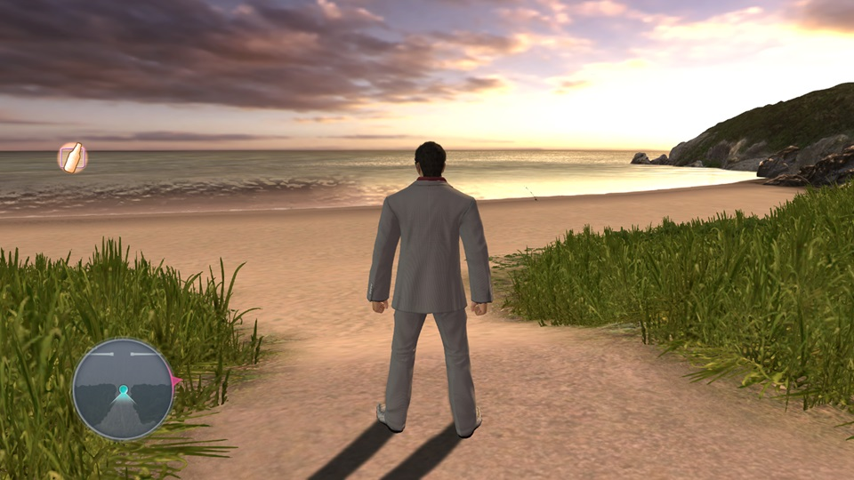
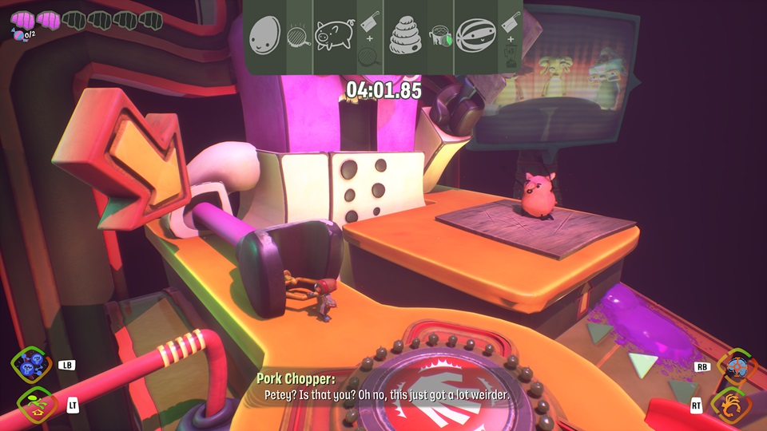
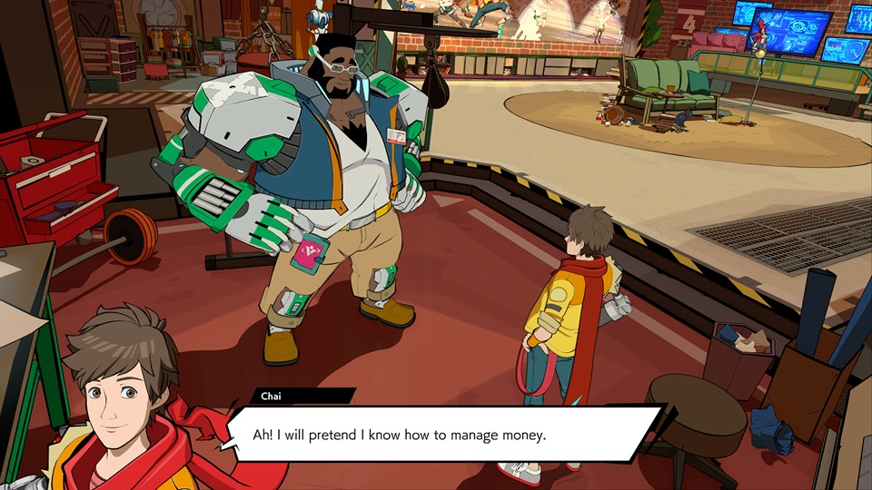
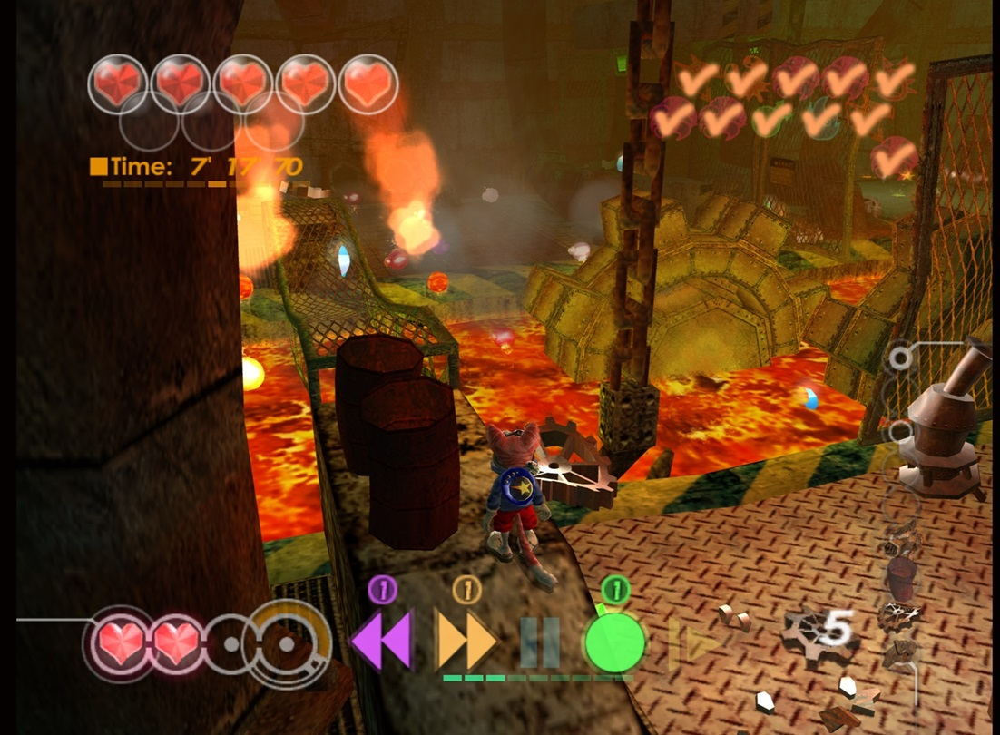
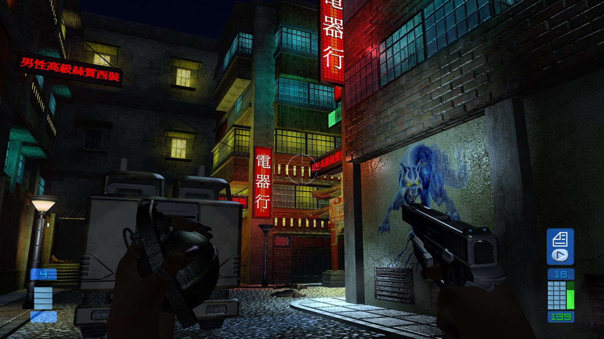
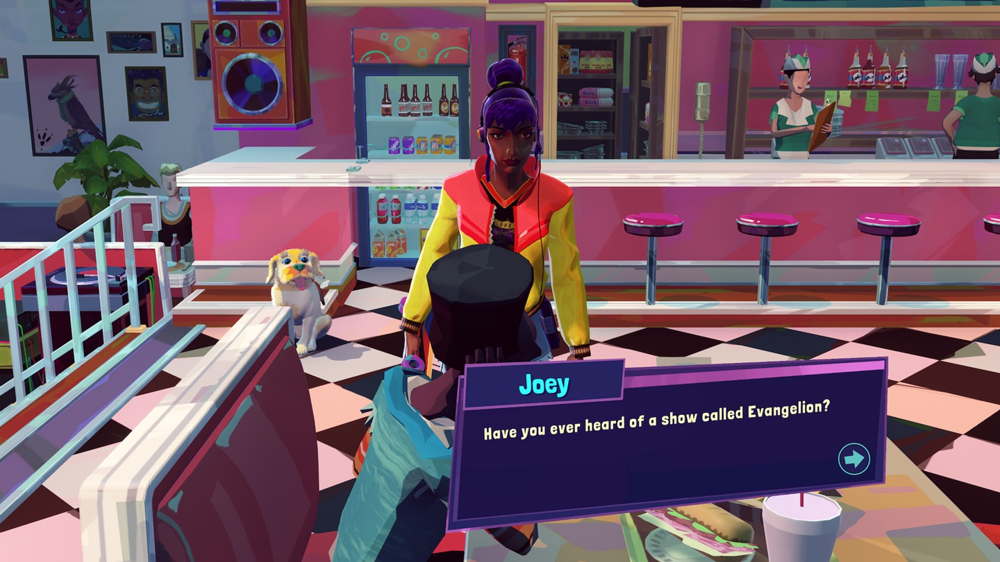
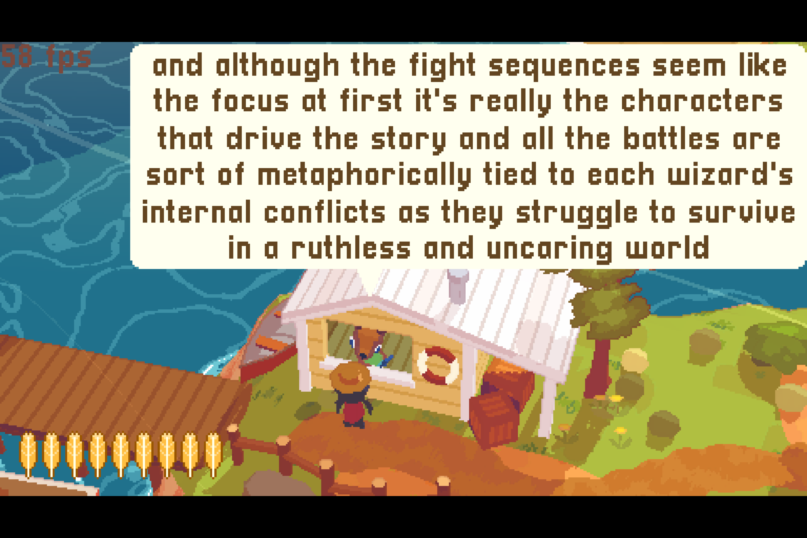
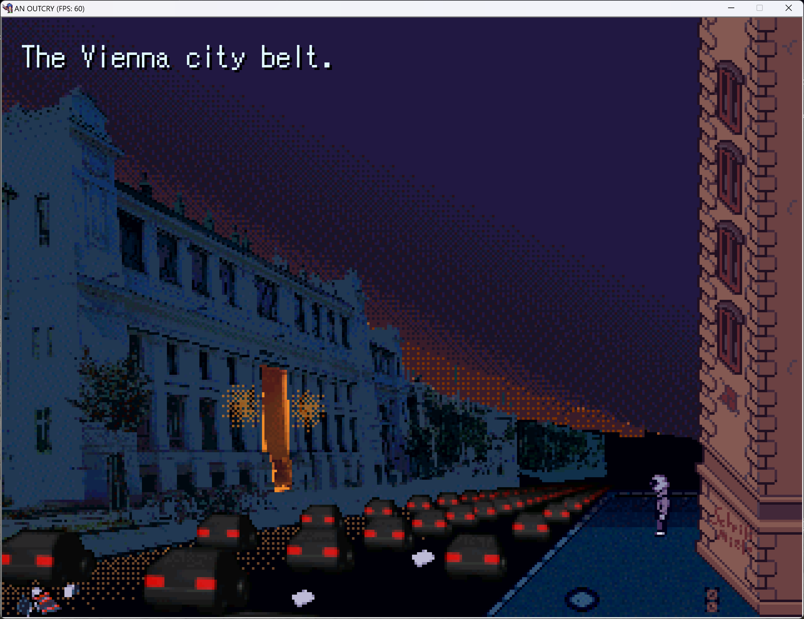

It's Summer! I hate Summer! But it's always good to get some hits off the videogame backlog.
I played some other games like Wordhopper, Chalicebound and Cleopatra Fortune as well, but this post is long enough already and I don't have as much to say about those - Do check them out though!
Yakuza 3
Going back to "old" Yakuza after Kiwami 2 actually changes gameplay so much, things become fresh again!
The Okinawa map is also a treat to run through, and this is probably the best fishing minigame in a Yakuza thus far.

People who say this game's combat is a bore have probably never played a fighting game before since the solution to enemies blocking is the same here - Just grab them. It's that easy.
I want to finish playing through the series before my Game pass sub lapses at the end of the year, but it's hard to avoid franchise fatigue with those games so I haven't started 4 yet...
Psychonauts 2

This game has a fairly slow start, but I found it very enjoyable when it actually opens up and lets you explore around.
Very solid setpieces all around, it's rare these days to get a 3D platformer I would consider "AAA" that isn't Mario*.
Schafer's still fucking got it when it comes to writing too!
I hope Double Fine doesn't get swallowed by the Microsoft behemoth and can keep making games like this. Speaking of...
Hi-Fi Rush
I can't believe you would close a game studio to get your accounting books green right after they'd release this banger of a game.
This is a crazy good character action game for what was basically Tango Gameworks' first shot at it - Microsoft had their Bayonetta and they just..threw it away like that**.

The emphasis on the beat system makes the game stand out while not veering into full-on rhythm game territory -- Although I certainly did enjoy the occasional Space Channel 5-esque QTE battles.
I'd recommend pirating this game, the studio's dead anyway and Microsoft doesn't deserve your money.
It's surprising how close the "streamer soundtrack" gets to the licensed music used for some of the bosses - It's a good move considering the license rights will probably expire in 8 or so years and the original tracks will have to be pulled out.
Burning Rangers
The lesser-known Sonic Team Saturn game. I'd played this before but couldn't get past the final level -- Not anymore!

I like the arcade gameplay in this better than NiGHTS, but the game really stretches the Saturn to its limits and has insanely aggressive culling as a result - Essential chunks of geometry will disappear as soon as they're about to leave the camera frame and it can make navigation difficult!
The setting of the game is super cool and it's a shame Sega never did anything else with it -- I can't shake the feeling that Sonic Team watched Magnetic Rose and thought "ayo what if we mixed it with Sentai?".
This game's soundtrack has the killer combo of Naofumi Hataya(Sonic CD) and Fumie Kumatani(all the best sonic adventure songs don't @ me) like with NiGHTS and it's really cool! Kinda like NiGHTS' dynamic music, the boss themes have multiple phases depending on their health and they flow in a really neat way.
You should check out this ongoing Unity remake fanproject.
BLiNX - The Time Sweeper
Another notch on my target list of playing all the Sonic Team-adjacent video games.
I was aware this game gets surprisingly punishing for what was xbox's own mascot platformer at the time, but holy fuck was I not ready - BLiNX gets merciless by the time you're at the end.

"why yes I would like a strict time limit, resource and ammo management in my cartoon 3D platformer" - words spoken by the utterly deranged
I will say that all the difficulty does make the game engaging despite the bullshit - It's quite satisying when you finally manage to nail everything correctly in a level.
Massive protip if you get to the end -- The boss rush is poorly programmed, so you can just hit start->retry on any individual boss without redoing the entire rush. Thank u naoto bigisland ohshima and god bless
ex-ST composers Mariko Nanba(Chaotix, Sonic 06's Kingdom Valley) and Hataya worked on this game's soundtrack, and it shows.
Similarly to BR, the final boss theme has health-dependent phases, except unlike the 3 or so phases of a BR boss, this one has like 11?? it's insane
Perfect Dark Zero
I was excited to play this because hell, it's an early 2000s cyberpunk Xbox shooter!
Give me those glossy textures and moody environments, look at this shit this is straight up Deus Ex Infinite War-HD-texture-pack-core:

The UI is sponsored by Samsung! The second level is in a fucking nightclub! The vibes are immaculate!
Then it falls apart because the locales become boring, the level design kinda sucks, the gunplay is barebones and the stealth aspects barely work, on top of Rare's mission-based FPS design which i've never been a huge fan of.
The Xbox Series' auto-HDR for 360 backwards compatible titles does make the game pretty though.
Thirsty Suitors
"This is just Scott Pilgrim but with more gay in it" is a pretty apt description of this game... but I wouldn't consider that a negative.
The characters and story in this are more endearing than I was expecting, and it's short enough that I actually wouldn't have minded a bit more. Jala is a massive girlfailure and it's really fun to roll along for the self-improvement ride.

The RPG gameplay does the SMT thing a bit where hitting enemy weaknesses gives you press turn advantage, but the game is nowhere near difficult enough for this to really come into play***.
I wish the skateboarding was expanded upon more - It's no Jet Set Radio but it couldve gotten pretty close with more, longer levels. As it is there's no real point to it except screwing around for an hour or so. Budget issues probably..
Soundtrack is quite good, although Diya's theme pretty much clears all the other songs imo.
Tyler is literally trans girl Shadow the Hedgehog and I will not elaborate.#
A Short Hike
This is just an isometric 3D version of Lil' Gator Game I played recently - I can see why people would complain about "comfy" games flooding the market, but I had a nice bit of fun with that one still.

Since you're a bird in this you can glide out of the box, and the main means of progression is stamina powerups that also allow you to multi-jump.
Aerial mobility gets quite fun towards the end as a result and I got some NiGHTS vibes out of the ending, which is always nice. (I feel like I'm mentioning NiGHTS a lot this time around for some reason...)
I like that the internal resolution is a setting, allowing you to go from N64 chunky ass jaggies™️ to smooth modern indie game lowpoly.
An Outcry
Wrapping up with some certified RPG Maker 2003 horrorkino -- This game doesn't go for any cheap tricks when it comes to scaring you, opting to rely on the atmosphere and (pretty damn good) writing instead.
The gameplay toys a bit with genre conventions(which you might or might not expect considering this is RPG Maker), but there's nothing obtuse in getting most of the endings here; You should probably save often though.

The Vienna citybelt is a mostly optional spot in the game but contains a ton of storytelling I really recommend clicking through - The election poster is one of my favorites despite how simple it is.
The game is about a flock of magic birds in Austria which kills everyone who isn't bird enough - It's (very) obvious what the birds are a metaphor for, and despite the game being two years old it still feels very relevant to current world events.
Very recommended, even if you're not too attuned to LGBT/queer terms - The birds come for everyone anyway.
* And even Mario is fairly rare since he only gets a full 3D platformer once per gen..
** I'm aware DMC-style games are never going to sell as well as a CoD, but I don't think you can keep surviving as a console manufacturer if all you want are AAA million-sellers.
*** Also you don't really have any weaknesses on your own and can deflect most status ailments through QTEs smh
# In this blogpost anyway.